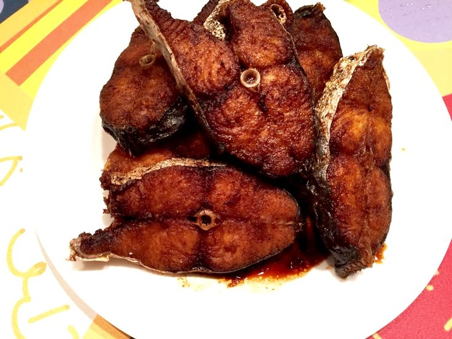

#6 - SMOKE FISH - 燻魚
This is one of the signature Shanghainese dish. I am not bragging, my Mom’s version is better than most of the restaurants. Though the recipe is simple and the steps are easy, though the deep-frying is bit challenging for most people. The key is
to control the splatter.

INGREDIENTS:
- 1 Catty (600g) Carp 鯇魚
- 1 TBSP Shao Xin wine
- 4 TBSP Dark soy sauce
- 3 TBSP Sugar
- 1 Green onion
- Oil for frying
Directions:
- Cut the carp in 3/4in. steak. Rinse clean with cool water.
- Before frying, pat dry the fish thoroughly with paper towel or kitchen towel.
- Mix the Shao Xin wine, soy sauce, sugar in a mixing bowl. Break the green onion into 2 or 3 pieces and add into the bowl to form dipping sauce.
- Heat the oil in a deep frying pan until hot.
- Pat dry the fish one more time before put a few pieces of fish at a time into the frying oil. (Leave some space between the pieces, so they do not stick together).
- Cover the frying pan with a spatter guard, or a lid if needed to protect yourself from spatter.
- Let it fry for 1 min before flipping the fish. Fry both side of the fish until lightly brown.
- Remove the fish from the hot oil and dip it into the dipping sauce immediate. Make sure the whole piece is well coated with the dipping sauce.
- Put the fish on a serving plate.
- Repeat steps 5-9 until all the fish is done.
- Pour the remaining sauce over the fish and marinate for at least 2 hours before serving.
- Serve at room temperature.
(Serves 1 person)
Note:
- You know the oil is hot enough for frying when putting a chopstick or a small piece of bread, the oil starts steadily bubbling.
- Ways to reduce spatter during deep-frying are: very dry ingredient to reduce surface water; use a deep frying pan to contain spatter, use spatter guard or lid to prevent spatter to excape.